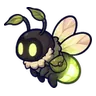
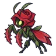
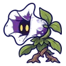
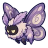
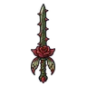
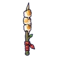
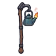
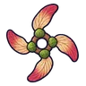
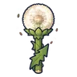

เนินกุหลาบหนาม
ดูบนแผนที่และวิธีไป วางแผนฟาร์ม
ชั้นล่างในป่ากองไฟ · Lv 14–22
เดินต่อไป
มอนในแมพ (9)
| มอน | Lv | ธาตุ | โซน |
|---|---|---|---|
 หิ่งห้อยหมอยา | 14–21 | ลม | ซุ้มกุหลาบยักษ์ |
 ตั๊กแตนกุหลาบหนาม | 14–22 | ดิน | ซุ้มกุหลาบยักษ์ |
 ดอกไม้ยิงเมล็ด | 14–21 | ดิน | ซุ้มกุหลาบยักษ์ |
| 16–22 | ดิน | ซุ้มกุหลาบยักษ์ | |
| 16–22 | ดิน | ซุ้มกุหลาบยักษ์ | |
| กระต่ายเขาเดียว | 16–22 | ไม่มีธาตุ | ซุ้มกุหลาบยักษ์ |
| ตั๊กแตนกุหลาบหนาม · ร่างกุหลาบม่วง | 16–22 | ดิน | |
 ผีเสื้อผงหลับ | 16–22 | ลม | ซุ้มกุหลาบยักษ์ |
| 24–24 | ลม |
อุปกรณ์ที่ดรอปในแมพนี้
| ของ | โอกาสสูงสุด |
|---|---|
 ดาบคู่กุหลาบหนาม | 0.5% |
| 0.5% | |
 ดาบคู่ย่างมาร์ชเมลโลว์ | 0.25% |
 ตะเกียงกาต้มน้ำ | 0.25% |
 ดาวยักษ์เมล็ดปีก | 0.25% |
 ออร์บดอกแดนดิไลออน | 0.25% |
| 0.25% | |
| 0.25% | |
| 0.25% | |
| 0.25% | |
| 0.25% | |
| 0.25% | |
| 0.25% | |
| 0.25% | |
| 0.25% |